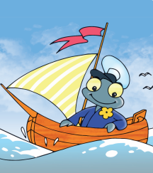
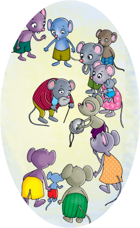

Los poemas infantiles
Alumno:
Los poemas infantiles
Alumno:
 Antes de leer
Antes de leer
|
El piojo
Por el río Paraná
|
 |
|
Juntáronse los ratones,
Salió un ratón barbicano,
|

Lope Félix de Vega Carpio (1562-1635)
Fue un importante escritor español, reconocido dentro de la literatura universal por su extensa obra, escrita tanto en prosa como en verso. |
 Comprendo para saber
Comprendo para saber
Los poemas infantiles son textos literarios, en los cuales se combinan las palabras para formar rimas melodiosas. Los poemas suelen expresar sentimientos y emociones como la amistad, el amor, la valentía, o contar hermosas y divertidas historias acerca de muchos temas.